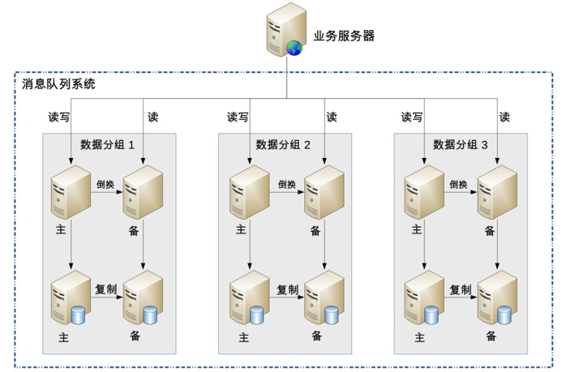

- 00 开篇词 照着做，你也能成为架构师！.md
- 01 架构到底是指什么？.md
- 02 架构设计的历史背景.md
- 03 架构设计的目的.md
- 04 复杂度来源：高性能.md
- 05 复杂度来源：高可用.md
- 06 复杂度来源：可扩展性.md
- 07 复杂度来源：低成本、安全、规模.md
- 08 架构设计三原则.md
- 09 架构设计原则案例.md
- 10 架构设计流程：识别复杂度.md
- 11 架构设计流程：设计备选方案.md
- 12 架构设计流程：评估和选择备选方案.md
- 13 架构设计流程：详细方案设计.md
- 14 高性能数据库集群：读写分离.md
- 15 高性能数据库集群：分库分表.md
- 16 高性能NoSQL.md
- 17 高性能缓存架构.md
- 18 单服务器高性能模式：PPC与TPC.md
- 19 单服务器高性能模式：Reactor与Proactor.md
- 20 高性能负载均衡：分类及架构.md
- 21 高性能负载均衡：算法.md
- 22 想成为架构师，你必须知道CAP理论.md
- 23 想成为架构师，你必须掌握的CAP细节.md
- 24 FMEA方法，排除架构可用性隐患的利器.md
- 25 高可用存储架构：双机架构.md
- 26 高可用存储架构：集群和分区.md
- 27 如何设计计算高可用架构？.md
- 28 业务高可用的保障：异地多活架构.md
- 29 异地多活设计4大技巧.md
- 30 异地多活设计4步走.md
- 31 如何应对接口级的故障？.md
- 32 可扩展架构的基本思想和模式.md
- 33 传统的可扩展架构模式：分层架构和SOA.md
- 34 深入理解微服务架构：银弹 or 焦油坑？.md
- 35 微服务架构最佳实践 - 方法篇.md
- 36 微服务架构最佳实践 - 基础设施篇.md
- 37 微内核架构详解.md
- 38 架构师应该如何判断技术演进的方向？.md
- 39 互联网技术演进的模式.md
- 40 互联网架构模板：存储层技术.md
- 41 互联网架构模板：开发层和服务层技术.md
- 42 互联网架构模板：网络层技术.md
- 43 互联网架构模板：用户层和业务层技术.md
- 44 互联网架构模板：平台技术.md
- 45 架构重构内功心法第一式：有的放矢.md
- 46 架构重构内功心法第二式：合纵连横.md
- 47 架构重构内功心法第三式：运筹帷幄.md
- 48 再谈开源项目：如何选择、使用以及二次开发？.md
- 49 谈谈App架构的演进.md
- 50 架构实战：架构设计文档模板.md
- 51 如何画出优秀的软件系统架构图？.md
- 加餐｜业务架构实战营开营了.md
- 加餐｜单服务器高性能模式性能对比.md
- 加餐｜扒一扒中台皇帝的外衣.md
- 如何高效地学习开源项目 华仔，放学别走！ 第3期.md
- 新书首发 《从零开始学架构》.md
- 架构专栏特别放送 华仔，放学别走！ 第2期.md
- 架构专栏特别放送 华仔，放学别走！第1期.md
- 架构师必读书单 华仔，放学别走！ 第5期.md
- 架构师成长之路 华仔，放学别走！ 第4期.md
- 结束语 坚持，成就你的技术梦想.md
11 架构设计流程：设计备选方案
上一期我讲了架构设计流程第1步识别复杂度，确定了系统面临的主要复杂度问题后，方案设计就有了明确的目标，我们就可以开始真正进行架构方案设计了。今天我来讲讲架构设计流程第2步：设计备选方案，同样还会结合上期“前浪微博”的场景，谈谈消息队列设计备选方案的实战。
架构设计第2步：设计备选方案
架构师的工作并不神秘，成熟的架构师需要对已经存在的技术非常熟悉，对已经经过验证的架构模式烂熟于心，然后根据自己对业务的理解，挑选合适的架构模式进行组合，再对组合后的方案进行修改和调整。
虽然软件技术经过几十年的发展，新技术层出不穷，但是经过时间考验，已经被各种场景验证过的成熟技术其实更多。例如，高可用的主备方案、集群方案，高性能的负载均衡、多路复用，可扩展的分层、插件化等技术，绝大部分时候我们有了明确的目标后，按图索骥就能够找到可选的解决方案。
只有当这种方式完全无法满足需求的时候，才会考虑进行方案的创新，而事实上方案的创新绝大部分情况下也都是基于已有的成熟技术。
- NoSQL：Key-Value的存储和数据库的索引其实是类似的，Memcache只是把数据库的索引独立出来做成了一个缓存系统。
- Hadoop大文件存储方案，基础其实是集群方案+ 数据复制方案。
- Docker虚拟化，基础是LXC（Linux Containers）。
- LevelDB的文件存储结构是Skip List。
在《技术的本质》一书中，对技术的组合有清晰的阐述：
新技术都是在现有技术的基础上发展起来的，现有技术又来源于先前的技术。将技术进行功能性分组，可以大大简化设计过程，这是技术“模块化”的首要原因。技术的“组合”和“递归”特征，将彻底改变我们对技术本质的认识。
虽说基于已有的技术或者架构模式进行组合，然后调整，大部分情况下就能够得到我们需要的方案，但并不意味着架构设计是一件很简单的事情。因为可选的模式有很多，组合的方案更多，往往一个问题的解决方案有很多个；如果再在组合的方案上进行一些创新，解决方案会更多。因此，如何设计最终的方案，并不是一件容易的事情，这个阶段也是很多架构师容易犯错的地方。
第一种常见的错误：设计最优秀的方案。
很多架构师在设计架构方案时，心里会默认有一种技术情结：我要设计一个优秀的架构，才能体现我的技术能力！例如，高可用的方案中，集群方案明显比主备方案要优秀和强大；高性能的方案中，淘宝的XX方案是业界领先的方案……
根据架构设计原则中“合适原则”和“简单原则“的要求，挑选合适自己业务、团队、技术能力的方案才是好方案；否则要么浪费大量资源开发了无用的系统（例如，之前提过的“亿级用户平台”的案例，设计了TPS 50000的系统，实际TPS只有500），要么根本无法实现（例如，10个人的团队要开发现在的整个淘宝系统）。
第二种常见的错误：只做一个方案。
很多架构师在做方案设计时，可能心里会简单地对几个方案进行初步的设想，再简单地判断哪个最好，然后就基于这个判断开始进行详细的架构设计了。
这样做有很多弊端：
- 心里评估过于简单，可能没有想得全面，只是因为某一个缺点就把某个方案给否决了，而实际上没有哪个方案是完美的，某个地方有缺点的方案可能是综合来看最好的方案。
- 架构师再怎么牛，经验知识和技能也有局限，有可能某个评估的标准或者经验是不正确的，或者是老的经验不适合新的情况，甚至有的评估标准是架构师自己原来就理解错了。
- 单一方案设计会出现过度辩护的情况，即架构评审时，针对方案存在的问题和疑问，架构师会竭尽全力去为自己的设计进行辩护，经验不足的设计人员可能会强词夺理。
因此，架构师需要设计多个备选方案，但方案的数量可以说是无穷无尽的，架构师也不可能穷举所有方案，那合理的做法应该是什么样的呢？
- 备选方案的数量以3 ~ 5个为最佳。少于3个方案可能是因为思维狭隘，考虑不周全；多于5个则需要耗费大量的精力和时间，并且方案之间的差别可能不明显。
- 备选方案的差异要比较明显。例如，主备方案和集群方案差异就很明显，或者同样是主备方案，用ZooKeeper做主备决策和用Keepalived做主备决策的差异也很明显。但是都用ZooKeeper做主备决策，一个检测周期是1分钟，一个检测周期是5分钟，这就不是架构上的差异，而是细节上的差异了，不适合做成两个方案。
- 备选方案的技术不要只局限于已经熟悉的技术。设计架构时，架构师需要将视野放宽，考虑更多可能性。很多架构师或者设计师积累了一些成功的经验，出于快速完成任务和降低风险的目的，可能自觉或者不自觉地倾向于使用自己已经熟悉的技术，对于新的技术有一种不放心的感觉。就像那句俗语说的：“如果你手里有一把锤子，所有的问题在你看来都是钉子”。例如，架构师对MySQL很熟悉，因此不管什么存储都基于MySQL去设计方案，系统性能不够了，首先考虑的就是MySQL分库分表，而事实上也许引入一个Memcache缓存就能够解决问题。
第三种常见的错误：备选方案过于详细。
有的架构师或者设计师在写备选方案时，错误地将备选方案等同于最终的方案，每个备选方案都写得很细。这样做的弊端显而易见：
- 耗费了大量的时间和精力。
- 将注意力集中到细节中，忽略了整体的技术设计，导致备选方案数量不够或者差异不大。
- 评审的时候其他人会被很多细节给绕进去，评审效果很差。例如，评审的时候针对某个定时器应该是1分钟还是30秒，争论得不可开交。
正确的做法是备选阶段关注的是技术选型，而不是技术细节，技术选型的差异要比较明显。例如，采用ZooKeeper和Keepalived两种不同的技术来实现主备，差异就很大；而同样都采用ZooKeeper，一个方案的节点设计是/service/node/master，另一个方案的节点设计是/company/service/master，这两个方案并无明显差异，无须在备选方案设计阶段作为两个不同的备选方案，至于节点路径究竟如何设计，只要在最终的方案中挑选一个进行细化即可。
设计备选方案实战
还是回到“前浪微博”的场景，上期我们通过“排查法”识别了消息队列的复杂性主要体现在：高性能消息读取、高可用消息写入、高可用消息存储、高可用消息读取。接下来进行第2步，设计备选方案。
1.备选方案1：采用开源的Kafka
Kafka是成熟的开源消息队列方案，功能强大，性能非常高，而且已经比较成熟，很多大公司都在使用。
2.备选方案2：集群 + MySQL存储
首先考虑单服务器高性能。高性能消息读取属于“计算高可用”的范畴，单服务器高性能备选方案有很多种。考虑到团队的开发语言是Java，虽然有人觉得C/C++语言更加适合写高性能的中间件系统，但架构师综合来看，认为无须为了语言的性能优势而让整个团队切换语言，消息队列系统继续用Java开发。由于Netty是Java领域成熟的高性能网络库，因此架构师选择基于Netty开发消息队列系统。
由于系统设计的QPS是13800，即使单机采用Netty来构建高性能系统，单台服务器支撑这么高的QPS还是有很大风险的，因此架构师选择采取集群方式来满足高性能消息读取，集群的负载均衡算法采用简单的轮询即可。
同理，“高可用写入”和“高性能读取”一样，可以采取集群的方式来满足。因为消息只要写入集群中一台服务器就算成功写入，因此“高可用写入”的集群分配算法和“高性能读取”也一样采用轮询，即正常情况下，客户端将消息依次写入不同的服务器；某台服务器异常的情况下，客户端直接将消息写入下一台正常的服务器即可。
整个系统中最复杂的是“高可用存储”和“高可用读取”，“高可用存储”要求已经写入的消息在单台服务器宕机的情况下不丢失；“高可用读取”要求已经写入的消息在单台服务器宕机的情况下可以继续读取。架构师第一时间想到的就是可以利用MySQL的主备复制功能来达到“高可用存储“的目的，通过服务器的主备方案来达到“高可用读取”的目的。
具体方案：

简单描述一下方案：
- 采用数据分散集群的架构，集群中的服务器进行分组，每个分组存储一部分消息数据。
- 每个分组包含一台主MySQL和一台备MySQL，分组内主备数据复制，分组间数据不同步。
- 正常情况下，分组内的主服务器对外提供消息写入和消息读取服务，备服务器不对外提供服务；主服务器宕机的情况下，备服务器对外提供消息读取的服务。
- 客户端采取轮询的策略写入和读取消息。
3.备选方案3：集群 + 自研存储方案
在备选方案2的基础上，将MySQL存储替换为自研实现存储方案，因为MySQL的关系型数据库的特点并不是很契合消息队列的数据特点，参考Kafka的做法，可以自己实现一套文件存储和复制方案（此处省略具体的方案描述，实际设计时需要给出方案）。
可以看出，高性能消息读取单机系统设计这部分时并没有多个备选方案可选，备选方案2和备选方案3都采取基于Netty的网络库，用Java语言开发，原因就在于团队的Java背景约束了备选的范围。通常情况下，成熟的团队不会轻易改变技术栈，反而是新成立的技术团队更加倾向于采用新技术。
上面简单地给出了3个备选方案用来示范如何操作，实践中要比上述方案复杂一些。架构师的技术储备越丰富、经验越多，备选方案也会更多，从而才能更好地设计备选方案。例如，开源方案选择可能就包括Kafka、ActiveMQ、RabbitMQ；集群方案的存储既可以考虑用MySQL，也可以考虑用HBase，还可以考虑用Redis与MySQL结合等；自研文件系统也可以有多个，可以参考Kafka，也可以参考LevelDB，还可以参考HBase等。限于篇幅，这里就不一一展开了。
小结
今天我为你讲了架构设计流程的第二个步骤：设计备选方案，基于我们模拟的“前浪微博”消息系统，给出了备选方案的设计样例，希望对你有所帮助。
这就是今天的全部内容，留一道思考题给你吧，除了这三个备选方案，如果让你来设计第四个备选方案，你的方案是什么？
© 2019 - 2023 Liangliang Lee. Powered by Vert.x and hexo-theme-book.